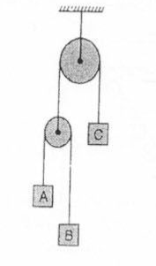
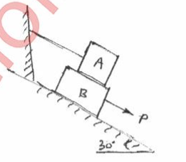

Total there will be approx 6 questions each of 3 marks , from all the chapters of the syllabus(Attempt any 5).
Max marks : 80
Question No. 1 is compulsary: [15]
- Find the force F4, so as to give the resultant or the force system shown below [4]
- A particle starts from rest from origin and its acceleration is given by, m/s2. Knowing that V=4m/s, when x=8m, find
- value of k
- Position when V=4.5m/s
- Rod AB of length 3m is kept on smooth planes as shown in fig. The velocity of end A is 5m/s along the inclined plane. Locate the ICR and find the velocity of end B. [4]
- What is Zero force member in a Tress. With examples, state the conditions for a zero force member. [4]
- A glass ball is dropped th horizontal floor from which it bounces to a height of 9m. On the it rises to a height of 6m. From what height the ball was dropped and what is the coefficient Of restitution between the glass and the floor. [4]
- Find the force F4, so as to give the resultant or the force system shown below [4]
-
- Figure shows a beam AB hinged at A and roller supported at B.The L shaped portion is welded at D to the beam AB.For the loading shown, find the support reactions. [8]
- The acceleration-time diagram for linear motion is shown. Construct velocity-time diagram and displacement-time diagram for the motion assuming that the motion starts with initial velocity of 5m/s from starting point. [6]
- The resultant of three concurrent space forces is at R=(-788)j N. Find the magnitude of F1,F2 and F3 forces. [6]
- Two spheres A and B of weights 1000N and 750N respectively are kept as shown in fig. Determine the reactions at all contact points 1,2,3 and 4. Radius of A is 400mm and Radius of B is 300mm. [8]
- A circle of diameter 1.5m is cut from a composite plate. Determine the centroid of the remaining area of the plate. [6]
- A rod AB has angular velocity of 2 rad/sec, counter clockwise as shown. End C of rod BC is free to move on a horizontal surface.Determine
- Angular velocity of BC
- Velocity of C
- A truss is loaded and supported as shown.Determine the following:
- Identify the zero force members, if any.
- Find the forces in members EF,FD AND FC by method of joints
- Find the forces in members GF,GC and BC by method of sections.
- A cylinder has a mass of 20kg and is released from rest when h=0 as shown in the figure. Determine its speed when h=3m. The springs each have an unstretched length of 2m. Take k=40N/m. [6]
- Amachine part is subjected to forces as shown. Find the resultant of force in magnitude and direction. Also locate the point where resultant cuts the centre line of bar AB. [6]
- A truss is loaded and supported as shown.Determine the following:
-
- Two blocks A and B are resting against the wall and floor as shown in fig. Find the minimum value of P that will hold the system in quilibrium. Take u=0.25 at floor,0.3 at the wall and 0.2 between the blocks. [8]
- A shot is fired with a bullet with an initial velocity of 20m/s from a point 10m in front of a vertical wall 5m high. Find the angle of projection with the horizontal to enable the shot to just clear the wall. Also find the range of shot where the bullet falls on the ground.
- Three blocks A, B and C of masses 3kg, 2kg, and 7kg respectivelyare connected as shown. Determine the acceleration of A,Band C.Also find the tension in the strings. [6] 
-
- Block A of weight 2000N is kept on an inclined plane at 35 degrees. It is connected to weight B by an inextensible string passing over a smooth pulley. Determine the weight of pan B so that Bjust moves down. Assume u=0.2. [5]
- A particle falling under gravity travels 25m in a particular second.Find the distance travelled by it in the next three seconds. [5]
- A rod AD of length 40cm is suspended from point D as shown in fig. If it has a weight of 25N and also supports a 40N load, find the tension in the cable using the method of virtual work. Take AC =30 cm. [5]
- A T shaped rod is suspended using 3 cables as shown. Neglecting the weight of the rods, find the tension in each cable. [5]
Max marks : 80
Attempt any four:
- State and prove varignones theorem. [5]
- Find the resultant of the force system shown in figure. [5]
- Find the coordinate of the centroid of the area shown in figure. [5]
- A force of 500N is acting on a block of 50kg mass resting on a horizontal surface as shown in figure. Determine the velocity after the block has traveleed a distance of 10m. Coeff. of kinetic friction = 0.5. [5]
- The position vector of a particle which moves in the X-Y plane is given by . Calculate the velocity and acceleration at t=1 sec. [5]
-
- Find the resultant of the force acting on the bell crank level as shown in fig. Aso locate its position write hinge B. [8]

- Determine the reaction at points of constant 1,2 and 3. A ssume smooth surfaces. [5]
- Two balls having 20kg and 30kg masses are moving toewards each other with velocities of 10m/s and 5m/s respectively. If other impact the ball having 30kg mass is moving with 6m/s velocity to the right , then determine the coefficient of restitution between the balls. [6]
- Find the resultant of the force acting on the bell crank level as shown in fig. Aso locate its position write hinge B. [8]
- Determine the centroid of the plant lamina if the shaded portion is remived. [8]
- Explain conditions for equilibrium for forces in spaces. [6]
- A 30N block is released from rest. If it slides down a rough incline having coefficient of friction 0.25. Determine the maximum compression of the string. [6]
- Find the support reaction at A and B for the beam loaded as shown in fig. [8]
- The V-X graph of a rectilinear moving particle is shown. Find the acceleration of the particle at 20m, 80m and 200m. [6]
- A bar AB 2m long slides down the plane as shown. The end A slides on the horizontal floor with a velocity of 3m/s. Determine the angular velocity of the rod AB and the velocity of the end B for the position shown. [6]
-
- Referring to the trus shown in figure, determine.
- Reaction at D and C
- Zero Force Members
- Force in members FE and DC by method of sections.
- Forces in other members by method of joints [8]
- Determine the force required to move the block A of 5000N weight up the inclined plane, coefficient of friction between all contact surfaces is 0.25. Neglect the weight of the wedge and the wedge angle is 15 degrees. [6]
- Determine the tension in a cable BC shown in fig by virtual work method. [6]
-
- A 500N crate kept on the top a 15 degree sloping surface is pushed down the plane with an initial velocity of 20m/s. If us=0.5 and uk=0.4, determine the distance travelled by the block and the time it will take as it comes to rest. [5]
- Derive the equation of the path of a prosectile and hence show that the path traced by a prosectile is a parabolic curve. [5]
- A particle is moving in the X-Y plane and its position is defined by . Find the ratio of curvature when t=2 seconds. [5]
- A force of 100 N acts at a point P(-2,3,5)m has its line of action passing through Q(10,3,4)m. Calculate moment of this force about origin(0,0,0). [5]
- Referring to the trus shown in figure, determine.
Max marks : 80
Solve any four: [20]
- Find the resultant of the parallel force system shown in Figure 1, and locate the same with respect to point C.
- Using Instantaneous Centre of Rotation (ICR) method, find the velocity of point A for the instant shown in Figure 2. Collar B moves along the vertical rod, whereas link AB moves along the plane which is inclined at 25 degrees.
- If the support reaction at A, for the beam shown in Figure 3, is zero, then find force ‘P’ and the support reaction at B.
- From the top of a tower, 28 m high, a stone is thrown vertically up with a velocity of 9m/s. Afetr how much time will the stone reach the ground? With what velocity will it strike the ground?
- For the truss shown in figure 4, find:
- Zero Force Members
- Support Reactions at C and D
-
- For the composite lamina shown in Figure 5, determine the coordinates of its centroid. [8]
- Replace the force system shown in Figure 6 with a single force and couple system acting at point B. [5]
- The link CD of the mechanism shown in Figure 7 is rotating in counterclockwise direction at an angular velocity of 5 rad/s. For the given instance, determine the angular velocity of link AB. [7]
- Cylinder A (diameter 1m, weight 20kN) and cylinder B (diameter 1.5m, weight 40kN) are arranged as shown in Figure 8. Find the reactions at all the contact points. All contacts are smooth. [6]
- Using Principle of Virtual Work, determine the force P which will keep the weightless bar AB in equilibrium. Take length AB as 2m and length AC as 8m. The bar makes an angle of 30o with horizontal. All the surfaces in contact are smooth. Refer Figure 9. [6]
- Velocity-time diagram for a particle travelling along a straight line is shown in Figure 10. Draw acceleration-time and displacement-time diagram for the particle. Also find important values of acceleration and displacement. [8]
- Find the force ‘F’ to have motion of block A impeding up the plane. Take coefficient of friction for all the surfaces in contact as 0.2. Consider the wedge B as weightless. Refer Figure 11. [7]
- Three forces F1, F2 and F3 act at the origin of Cartesian coordinate axes system. The force F1 (= 70N) acts along OA whereas F2 (= 80N) acts along OB and F3 (= 100N) acts along OC. The coordinates of the points A, B and C are (2,1,3), (-1,2,0) and (4,-1,5) respectively. Find the resultant of this force system. [5]
- A 75kg person stands on a weighing scale in an elevator. 3 seconds after the motion starts from rest, the tension in the hoisting cable was found to be 8300N. Find the reading of the scale, in kg during this interval. Also find the velocity of the elevator at the end of this interval. The total mass of the elevator, including mass of the person and the weighing scale, is 750kg. If the elevator is now moving in the opposite direction, with same magnitude of acceleration, what will be the new reading of the scale? [8]
-
- The cylinder B, diameter 400mm and weight 5kN, is held in position as shown in Figure 12 with the help of cable AB. Find the tension in the cable and the reaction developed at contact C. [4]
- Find the weight WB so as to have its impending motion down the plane. Take weight of block A as 2kN. The pin connected rod AB is initially is in horizontal position. Refer Figure 13. [5]
- Two springs, each having stiffness of 0.6N/cm and length 20 cm are connected to a ball B of weight 50N. The initial tension developed in each spring is 1.6N. The arrangement is initially horizontal, as shown in Figure 14. If the ball is allowed to fall from rest, what will be its velocity at D, after it has fallen through a height of 15 cm? [5]
- Two balls, A (mass 3kg) and B (mass 4kg), are moving with velocities 25 m/s and 40 m/s respectively (Refer Figure 15). Before impact, the direction of velocity of two balls are 300 and 500 with the line joining their centers as shown in Figure 15. If coefficient of restitution for the impact is 0.78, find the magnitude and the direction of velocities of the balls after the impact. [6]
-
- For the truss shown in Figure 16, find the forces in members DE, BD and CB. [5]
- A particle moves in x-y plane with acceleration components ax = -3m/s2 and ay = -16t m/s2. If its initial velocity is V0 = 50m/s directed at 35o to the x–axis, compute the radius of curvature of the path at t = 2 sec. [6]
- A force of magnitude of 20kN, acts at point A(3,4,5)m and has its line of action passing through B(5,-3,4)m. Calculate the moment of this force about a line passing through points S(2,-5,3) m and T(-3,4,6)m. [5]
- Find an expression for maximum range of a particle which is projected with an initial velocity of ‘u’ inclined at an angle of ‘β’ with the horizontal. [4]
Max marks : 80
Question 1 is compulsary
- In the rocket arm shown in figure the moment of 'F' about 'O' balances that 'P'. Find F. [4]
- State Lami's theorem. State the necessary conditions for application of Lami's theorem. [4]
- A homogeneous cylinder 3m diameter and weighting 400N resting on two rough inclined surface's shown. If the angle of friction is 15 degress, find couple 'C' applied to the cylinder that will start it rotating clockwise. [4]
- From v-t diagram, find (i) the distance travelled in 10 sec (ii) Total distance travelled in 50 sec (iii) Retardation [4]
- Blocks P1 and P2 are connected by inextensible string. Find velocity of block P1, if it falls by 0.6m starting from rest. The coefficient of friction is 0.2, pulley is friction less.
- Compute the resultant of the three forces acting on the plate shown in fig. Locate its intersection with AB and BC. [6]
- Two cylinders 1 and 2 are connected by a rigid bar of negligible weight hinged to each cylinder and left to rest in equilibrium in the position shown under the application of force 'P' applied at the center Of cylinder 2. Determine the magnitude of Force P. If the weights Of the cylinders 1 and 2 are 100N and 50N respectively. [8]
- Just before they collide, two disk on a horizontal surface have velocities shown in fig. Knowing that 90N disk 'A' rebounds to the left with a velocity of 1.8 m/s. Determine the rebound velocity of the 135 N. Assume the Impact is perfectly elastic. [6]

- Find the centroid of the shaded portion of the plate. [8]
- Co-ordinate distance are in 'm' units for the space frame in fig. there are 3 members. AB, AC and AD. There is a force W-10 KN acting at A in a vertically upward direction. Determine tension in AB, AC and AD. [6]
- A 50N coller slides without friction along a smooth rod which is kept inclined at 60 degrees to the horizontal. The spring is attached to the collar and the support C . The spring is unstretched when the coller is at 'A' (AC is horizontal) .Determiöe the Value of spring constant 'K' given that the collar has a velocity of 2.5 m/s when it has moved 0.5m along the rod as shown in fig. [6]
- A boom AB is suppored as shown in fig by a cable runs from 'C' over a small smooth pulley at D. Compute the tension T in cable and reaction at A. Neglect the wt Of the boom and size Of the pulley. [8]
- The acceleration of the train starting fromm rest at any instant is given by a=8/(v2+1) where V is velocity of the train in m/s. Find the velocity of the train when its displacement is 20m and displacement when velocity is 64.8kmph. [6]
- Angular velocity of connector BC is 4r/s in clockwise direction. What are angular velocities of cranks AB and CD. [6]
- In the truss shown in fig, compute the forces in each member. [8]
- Determine the speed at which the basketball at A must be thrown at an angle of 30 degrees so that it makes it to basket at B. Also find at what speed it passes through the hoop. [6]
- Fig shows a collar B which moves upwards which moves upwards with a constant velocity of 1.5m/s. At the instant when angle = 50 determine (i) Angular velocity of rod pinned at B and freely resting at A against 25 degrees sloping ground (ii) Velocity of end A of the rod.
- A force of 140 KN passes through point C (-6,2,2) and goes to point B(6,6,8) . Calculat emoment of force about origin. [4]
- Ref to fig. If the coefficient of friction is 0.60 for all contact sirfaces and theta is 30, what force must be applied to block B acting down and parallel to the incline will start motionand what will be the tension in the cord parallel to the inclined plane attached to 'A'. Take Wa=120N and Wb= 200N. [8] 
- Determine the required stiffness K so that the uniform 7kg bar AC is in equilibrium when theta is 30 degree. Due to the collar guide at B , the spring remains vertical and is unstretchded when angle is 0. Use Principle of virtual work. [4]
- The system shown in figure is initially at rest. Neglecting friction, determine the force P required if the velocity of the collar B is 5m/s after 2 sec and corresponding tension in the cable. [4]
Max marks : 80
Question 1 is compulsary
- Find fourth force (F4) completely so as to give resultant of the system of force as shown in fig. [4]

- Determine the magnitude and direction of the smallest force P required to start the wheel W=10N over the block. . [4]
- If a horizontal force of 1200N is applied to block of 1000N , then block will be held in equilibrium or slides down or moves up? Take coeff of friction = 0.3 [4]
- Starting from rest at s=0, a car travels in a straight line with an acceleration as shown by the a-s graph. Determine the car's speed when s=20m, s=100m, s=150m. [4]
- Three m1,m2 and m3 of masses 1.5kg,2kg, 1kg respectively are placed on a rough surface with coeff. of friction 0.20 as shown. If a force is applied to accelerate the block at 3m/s2. What will be the force that the 1.5kg block exerts on 2kg block? [4]
- Find fourth force (F4) completely so as to give resultant of the system of force as shown in fig. [4]
-
- A dam is subjected to three forces as shown in figure. Determine the single equivalent force and locate its point of intersection with base AD. [6]
- A cylinder weighing 1000N and 1.5 m in diameter, is supported by a beam AB of length 6m and weight 400N as shown. Neglecting friction at the surface of contact of the cylinder.
Determine
- Wall reaction at D
- Support reaction at A
- Tension in the cable BC [8]

- Two balls of 0.12 kg collide when they are moving with velocities 2m/s and 6m/s perpendicular to each other as shown in fig. If the coefficient of restitution between A and B is 0.8, dtermine the velocity of A and B after the impact. [6]
- Find the centroid of the shaded portion of the given area shown in fig. [8]
- Knowing that the tension in AC is T2 = 20KN. Determine required values T1(tensoin in AB) and T3(tension in AD), so that the resultant of three forces on A is vertical. Also calculate this resultant. [6]
- Fig shows a collar of mass 20 kg which is supported on a smooth rod.The attached springs are both compressed 0.4m when d=0.5m. Determine the speed of the collar after the applied force F=100N causes it to be displaced so that d=0.3m. Knowing that collar is at rest when d=0.5m. [6]
- Find the support reactions at points A and B of the beam. [8]

- The motion of the particle is defined by the relation a=(0.8t)m/sec2 where t is measured in seconds. It is found that at X=5m, V=12m/sec when t=2sec. Find the position and velocity at t=6sec. [6]
- Rod EB in the mechanism shown in the figure has angular velocity of 4rad/sec at the instant shown in counterclockwise direction. Calculate: (i)angular velocity of rod AD
(ii)velocity of collar CD (iii) velocity of point A. [6]

- Find the support reactions at points A and B of the beam. [8]
-
- A simply supported pin jointed truss is loaded and supported as shown in fig. (i)Identify the members carrying zero forces.(ii)Find support reactions (iii)Find forces in members CD,CG,FG,CF using method of section. [8]
- A jet of water discharging from a nozzle hits a vertical screen placed at a distance of 6m from the nozzle at a height of 4m.When the screen is shifted 4m away from the nozzle, from its initial position, the jet hits the screen again at the same point. Find the angle and velocity of projection of the jet at the nozzle. [6]
- In a crank and connecting rod mechanishm, the length of the cank and connecting rod are 300mm and 1200mm respectively.The crank is rotating at 180rpm. Find the velocity of the piston , when the crank is at an angle of 45 degrees with the horizontal. [6]
-
- Force F=80i+50j-60k passes through a point A(6,2,6). Compute its moment about point B(8,1,4). [4]
- A horizontal force of 5KN, is acting on the wedge as shown in fig. The coefficient of friction at all rubbing surfaces is 0.25. Find the load W , which can be held in position. The weight of block B can be neglected. [8]
- The stiffness of the string is 600N/m. Find the force P required to maintain equilibium such that angle =30 degrees. The spring is unstretched at 60 degress.
Neglect weight of the rods . Use principle of virtual work. [4]

- Two masses are interconnected with a pulley system, neglecting the frictional effects of the pulleys and cord, determine the acceleration of mass m2. Take m1=50kg and m2=40kg.